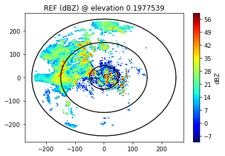
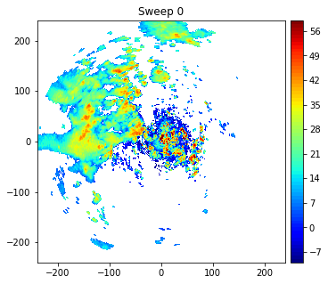
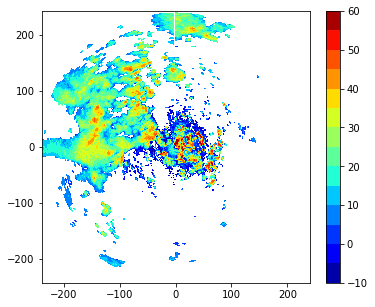

Contents
Step 1: Import necessary libraries
import xarray as xr
import numpy as np
import matplotlib.pyplot as plt
import warnings
warnings.filterwarnings('ignore')
Step 2: Read Data
ds = xr.open_dataset('../imd_mum/polar_MUM150615000342.nc')
---------------------------------------------------------------------------
KeyError Traceback (most recent call last)
File ~/miniconda3/envs/syed/lib/python3.10/site-packages/xarray/backends/file_manager.py:199, in CachingFileManager._acquire_with_cache_info(self, needs_lock)
198 try:
--> 199 file = self._cache[self._key]
200 except KeyError:
File ~/miniconda3/envs/syed/lib/python3.10/site-packages/xarray/backends/lru_cache.py:53, in LRUCache.__getitem__(self, key)
52 with self._lock:
---> 53 value = self._cache[key]
54 self._cache.move_to_end(key)
KeyError: [<class 'netCDF4._netCDF4.Dataset'>, ('/Users/rizvi/Downloads/Projects/jbook/IMD_data/imd_mum/polar_MUM150615000342.nc',), 'r', (('clobber', True), ('diskless', False), ('format', 'NETCDF4'), ('persist', False))]
During handling of the above exception, another exception occurred:
FileNotFoundError Traceback (most recent call last)
Input In [2], in <cell line: 1>()
----> 1 ds = xr.open_dataset('../imd_mum/polar_MUM150615000342.nc')
File ~/miniconda3/envs/syed/lib/python3.10/site-packages/xarray/backends/api.py:495, in open_dataset(filename_or_obj, engine, chunks, cache, decode_cf, mask_and_scale, decode_times, decode_timedelta, use_cftime, concat_characters, decode_coords, drop_variables, backend_kwargs, *args, **kwargs)
483 decoders = _resolve_decoders_kwargs(
484 decode_cf,
485 open_backend_dataset_parameters=backend.open_dataset_parameters,
(...)
491 decode_coords=decode_coords,
492 )
494 overwrite_encoded_chunks = kwargs.pop("overwrite_encoded_chunks", None)
--> 495 backend_ds = backend.open_dataset(
496 filename_or_obj,
497 drop_variables=drop_variables,
498 **decoders,
499 **kwargs,
500 )
501 ds = _dataset_from_backend_dataset(
502 backend_ds,
503 filename_or_obj,
(...)
510 **kwargs,
511 )
512 return ds
File ~/miniconda3/envs/syed/lib/python3.10/site-packages/xarray/backends/netCDF4_.py:553, in NetCDF4BackendEntrypoint.open_dataset(self, filename_or_obj, mask_and_scale, decode_times, concat_characters, decode_coords, drop_variables, use_cftime, decode_timedelta, group, mode, format, clobber, diskless, persist, lock, autoclose)
532 def open_dataset(
533 self,
534 filename_or_obj,
(...)
549 autoclose=False,
550 ):
552 filename_or_obj = _normalize_path(filename_or_obj)
--> 553 store = NetCDF4DataStore.open(
554 filename_or_obj,
555 mode=mode,
556 format=format,
557 group=group,
558 clobber=clobber,
559 diskless=diskless,
560 persist=persist,
561 lock=lock,
562 autoclose=autoclose,
563 )
565 store_entrypoint = StoreBackendEntrypoint()
566 with close_on_error(store):
File ~/miniconda3/envs/syed/lib/python3.10/site-packages/xarray/backends/netCDF4_.py:382, in NetCDF4DataStore.open(cls, filename, mode, format, group, clobber, diskless, persist, lock, lock_maker, autoclose)
376 kwargs = dict(
377 clobber=clobber, diskless=diskless, persist=persist, format=format
378 )
379 manager = CachingFileManager(
380 netCDF4.Dataset, filename, mode=mode, kwargs=kwargs
381 )
--> 382 return cls(manager, group=group, mode=mode, lock=lock, autoclose=autoclose)
File ~/miniconda3/envs/syed/lib/python3.10/site-packages/xarray/backends/netCDF4_.py:330, in NetCDF4DataStore.__init__(self, manager, group, mode, lock, autoclose)
328 self._group = group
329 self._mode = mode
--> 330 self.format = self.ds.data_model
331 self._filename = self.ds.filepath()
332 self.is_remote = is_remote_uri(self._filename)
File ~/miniconda3/envs/syed/lib/python3.10/site-packages/xarray/backends/netCDF4_.py:391, in NetCDF4DataStore.ds(self)
389 @property
390 def ds(self):
--> 391 return self._acquire()
File ~/miniconda3/envs/syed/lib/python3.10/site-packages/xarray/backends/netCDF4_.py:385, in NetCDF4DataStore._acquire(self, needs_lock)
384 def _acquire(self, needs_lock=True):
--> 385 with self._manager.acquire_context(needs_lock) as root:
386 ds = _nc4_require_group(root, self._group, self._mode)
387 return ds
File ~/miniconda3/envs/syed/lib/python3.10/contextlib.py:135, in _GeneratorContextManager.__enter__(self)
133 del self.args, self.kwds, self.func
134 try:
--> 135 return next(self.gen)
136 except StopIteration:
137 raise RuntimeError("generator didn't yield") from None
File ~/miniconda3/envs/syed/lib/python3.10/site-packages/xarray/backends/file_manager.py:187, in CachingFileManager.acquire_context(self, needs_lock)
184 @contextlib.contextmanager
185 def acquire_context(self, needs_lock=True):
186 """Context manager for acquiring a file."""
--> 187 file, cached = self._acquire_with_cache_info(needs_lock)
188 try:
189 yield file
File ~/miniconda3/envs/syed/lib/python3.10/site-packages/xarray/backends/file_manager.py:205, in CachingFileManager._acquire_with_cache_info(self, needs_lock)
203 kwargs = kwargs.copy()
204 kwargs["mode"] = self._mode
--> 205 file = self._opener(*self._args, **kwargs)
206 if self._mode == "w":
207 # ensure file doesn't get overridden when opened again
208 self._mode = "a"
File src/netCDF4/_netCDF4.pyx:2353, in netCDF4._netCDF4.Dataset.__init__()
File src/netCDF4/_netCDF4.pyx:1963, in netCDF4._netCDF4._ensure_nc_success()
FileNotFoundError: [Errno 2] No such file or directory: b'/Users/rizvi/Downloads/Projects/jbook/IMD_data/imd_mum/polar_MUM150615000342.nc'
ds
<xarray.Dataset>
Dimensions: (time: 3599, range: 800, sweep: 10)
Coordinates:
* time (time) datetime64[ns] 2015-06-15T00:03:42 ... 2015...
* range (range) float64 0.0 300.0 ... 2.394e+05 2.397e+05
azimuth (time) float32 0.0 0.9998 2.0 ... 357.0 358.0 359.0
elevation (time) float32 0.1978 0.1978 0.1978 ... 21.0 21.0
Dimensions without coordinates: sweep
Data variables: (12/15)
REF (time, range) float32 ...
VEL (time, range) float32 ...
WIDTH (time, range) float32 ...
sweep_number (sweep) int16 0 1 2 3 4 5 6 7 8 9
fixed_angle (sweep) float32 0.1978 0.9998 2.0 ... 12.0 16.0 21.0
sweep_start_ray_index (sweep) int64 0 360 720 1080 ... 2160 2520 2880 3240
... ...
longitude float32 72.81
altitude float32 100.0
time_coverage_start |S32 b'2015-06-15T00:03:42Z'
time_coverage_end |S32 b'2015-06-15T00:10:01Z'
time_reference |S32 b'1970-1-1 00:00:00.00'
volume_number int32 0
Attributes:
instrument_name: MUM
Conventions: CF/Radial
field_names: REF, VEL, WIDTH
history: created by rizvi on Syeds-MacBook-Air.local at 2021-11-...xarray.Dataset
- time: 3599
- range: 800
- sweep: 10
- time(time)datetime64[ns]2015-06-15T00:03:42 ... 2015-06-...
- long_name :
- time_in_seconds_since_volume_start
- standard_name :
- time
- comment :
- Coordinate variable for time. Time at the center of each ray, in fractional seconds since the global variable time_coverage_start
array(['2015-06-15T00:03:42.000000000', '2015-06-15T00:03:42.000000000', '2015-06-15T00:03:42.000000000', ..., '2015-06-15T00:10:01.000000000', '2015-06-15T00:10:01.000000000', '2015-06-15T00:10:01.000000000'], dtype='datetime64[ns]') - range(range)float640.0 300.0 ... 2.394e+05 2.397e+05
- long_name :
- range_to_measurement_volume
- units :
- meters
- standard_name :
- projection_range_coordinate
- axis :
- radial_range_coordinate
- spacing_is_constant :
- true
- comment :
- Coordinate variable for range. Range to center of each bin.
array([ 0., 300., 600., ..., 239100., 239400., 239700.])
- azimuth(time)float32...
- long_name :
- azimuth_angle_from_true_north
- units :
- degrees
- standard_name :
- beam_azimuth_angle
- axis :
- radial_azimuth_coordinate
- comment :
- Azimuth of antenna relative to true north
array([ 0. , 0.999756, 1.999512, ..., 357.00073 , 358.0005 , 359.00024 ], dtype=float32) - elevation(time)float32...
- long_name :
- elevation_angle_from_horizontal_plane
- units :
- degrees
- standard_name :
- beam_elevation_angle
- axis :
- radial_elevation_coordinate
- comment :
- Elevation of antenna relative to the horizontal plane
array([ 0.197754, 0.197754, 0.197754, ..., 21.000366, 21.000366, 21.000366], dtype=float32)
- REF(time, range)float32...
- long_name :
- Reflectivity
- units :
- dBZ
- standard_name :
- equivalent_reflectivity_factor
[2879200 values with dtype=float32]
- VEL(time, range)float32...
- long_name :
- Mean dopper velocity
- units :
- m/s
- standard_name :
- radial_velocity_of_scatterers_away_from_instrument
[2879200 values with dtype=float32]
- WIDTH(time, range)float32...
- long_name :
- Doppler spectrum width
- units :
- m/s
- standard_name :
- doppler_spectrum_width
[2879200 values with dtype=float32]
- sweep_number(sweep)int16...
- long_name :
- Sweep number
- units :
- count
- standard_name :
- sweep_number
array([0, 1, 2, 3, 4, 5, 6, 7, 8, 9], dtype=int16)
- fixed_angle(sweep)float32...
- long_name :
- Target angle for sweep
- units :
- degrees
- standard_name :
- target_fixed_angle
array([ 0.197754, 0.999756, 1.999512, 2.999268, 4.498901, 5.998535, 8.997803, 12.002563, 16.001587, 21.000366], dtype=float32) - sweep_start_ray_index(sweep)int64...
- long_name :
- Index of first ray in sweep, 0-based
- units :
- count
array([ 0, 360, 720, 1080, 1440, 1800, 2160, 2520, 2880, 3240])
- sweep_end_ray_index(sweep)int64...
- long_name :
- Index of last ray in sweep, 0-based
- units :
- count
array([ 359, 719, 1079, 1439, 1799, 2159, 2519, 2879, 3239, 3599])
- sweep_mode(sweep)|S32...
- long_name :
- Sweep mode
- units :
- unitless
- standard_name :
- sweep_mode
- comment :
- Options are: "sector", "coplane", "rhi", "vertical_pointing", "idle", "azimuth_surveillance", "elevation_surveillance", "sunscan", "pointing", "manual_ppi", "manual_rhi"
array([b'azimuth_surveillance', b'azimuth_surveillance', b'azimuth_surveillance', b'azimuth_surveillance', b'azimuth_surveillance', b'azimuth_surveillance', b'azimuth_surveillance', b'azimuth_surveillance', b'azimuth_surveillance', b'azimuth_surveillance'], dtype='|S32') - latitude()float32...
- long_name :
- Latitude
- units :
- degrees_north
- standard_name :
- Latitude
array(18.9013, dtype=float32)
- longitude()float32...
- long_name :
- Longitude
- units :
- degrees_east
- standard_name :
- Longitude
array(72.8076, dtype=float32)
- altitude()float32...
- long_name :
- Altitude
- units :
- meters
- standard_name :
- Altitude
- positive :
- up
array(100., dtype=float32)
- time_coverage_start()|S32...
- long_name :
- UTC time of first ray in the file
- units :
- unitless
array(b'2015-06-15T00:03:42Z', dtype='|S32')
- time_coverage_end()|S32...
- long_name :
- UTC time of last ray in the file
- units :
- unitless
array(b'2015-06-15T00:10:01Z', dtype='|S32')
- time_reference()|S32...
- long_name :
- UTC time reference
- units :
- unitless
array(b'1970-1-1 00:00:00.00', dtype='|S32')
- volume_number()int32...
- long_name :
- Volume number
- units :
- unitless
array(0, dtype=int32)
- instrument_name :
- MUM
- Conventions :
- CF/Radial
- field_names :
- REF, VEL, WIDTH
- history :
- created by rizvi on Syeds-MacBook-Air.local at 2021-11-26T14:39:30.491293 using Py-ART
Step 3: Retrieve required parameters
rng = ds['range'] / 1000.
rng.attrs['units'] = 'km'
az = np.around(ds['azimuth']*100)/100
az.attrs['units'] = 'deg'
ele = np.around(ds['elevation']*10)/10
ele.attrs['units'] = 'deg'
ref = ds['REF']
Method 1: Using sweep start ray indices and sweep end ray indices
start_idx = ds['sweep_start_ray_index'].values
end_idx = ds['sweep_end_ray_index'].values
start_idx,end_idx
(array([ 0, 360, 720, 1080, 1440, 1800, 2160, 2520, 2880, 3240]),
array([ 359, 719, 1079, 1439, 1799, 2159, 2519, 2879, 3239, 3599]))
x = rng * np.sin(np.deg2rad(az[0:359]))
y = rng * np.cos(np.deg2rad(az[0:359]))
plt.contourf(x,y,ref[0:359].T,levels=range(-10,60),cmap='jet')
plt.colorbar(label='dBZ')
plt.title('REF (dBZ) @ elevation '+str(ds.fixed_angle[0].values))
t = np.linspace(0,2*np.pi)
for r in [50,150,250]:
a, = plt.plot(r*np.cos(t),r*np.sin(t), color='k',label=f"${r=}$")
plt.show()

x = rng * np.sin(np.deg2rad(az[360:720]))
y = rng * np.cos(np.deg2rad(az[360:720]))
plt.contourf(x,y,ref[360:720].T,levels=range(-10,60),cmap='jet')
plt.colorbar(label='dBZ')
plt.title('REF (dBZ) @ elevation '+str(ds.fixed_angle[1].values))
t = np.linspace(0,2*np.pi)
for r in [50,150,250]:
a, = plt.plot(r*np.cos(t),r*np.sin(t), color='k',label=f"${r=}$")
plt.show()

Method 2: By creating function
def sweep(i):
si = ds.sweep_start_ray_index.values
ei = ds.sweep_end_ray_index.values
return slice(si[i],ei[i]+1)
def radar_coords_to_cart(rng, az, ele, i,debug=False):
theta_e = ele * np.pi / 180.0 # elevation angle in radians.
theta_a = az[sweep(i)] * np.pi / 180.0 # azimuth angle in radians.
R = 6371.0 * 1000.0 * 4.0 / 3.0 # effective radius of earth in meters.
r = rng # distances to gates in meters.
z = (r ** 2 + R ** 2 + 2.0 * r * R * np.sin(theta_e)) ** 0.5 - R
s = R * np.arcsin(r * np.cos(theta_e) / (R + z)) # arc length in m.
x = s * np.sin(theta_a)
y = s * np.cos(theta_a)
return x, y, z
def get_z_from_radar(ds):
"""Input radar object, return z from radar (km, 2D)"""
azimuth_1D = ds.azimuth
elevation_1D = ds.elevation
srange_1D = ds.range
sr_2d, az_2d = np.meshgrid(srange_1D, azimuth_1D)
el_2d = np.meshgrid(srange_1D, elevation_1D)[1]
xx, yy, zz = radar_coords_to_cart(sr_2d/1000.0, az_2d, el_2d)
return zz + ds.altitude['data']
i = 0
ele = ds.fixed_angle[i]
x,y,z = radar_coords_to_cart(rng,az,ele,i)
plt.figure(figsize=(6,5))
plt.contourf(x,y,ds.REF[sweep(i)].T,levels=range(-10,60),cmap='jet')
plt.colorbar(pad=0.02)
plt.title('Sweep {}'.format(i))
plt.show()

**Method 3: **
k1 = np.where(ds.elevation<=0.6)
e1=ds.elevation[k1]
az1=ds.azimuth[k1]
ref1=ds.REF[k1]
#convert the polar coordinates to Cartesian
x = rng * np.sin(np.deg2rad(az1))
y = rng * np.cos(np.deg2rad(az1))
ref2 = np.ma.array(ref1, mask=np.isnan(ref1))
###########################################
# Finally, we plot them up using matplotlib.
fig, ax = plt.subplots(1, 1, figsize=(6, 5))
plt.contourf(x,y,ref2.T,levels=np.linspace(-10,60,15),cmap='jet')
plt.colorbar()
ax.set_aspect('equal', 'datalim')
